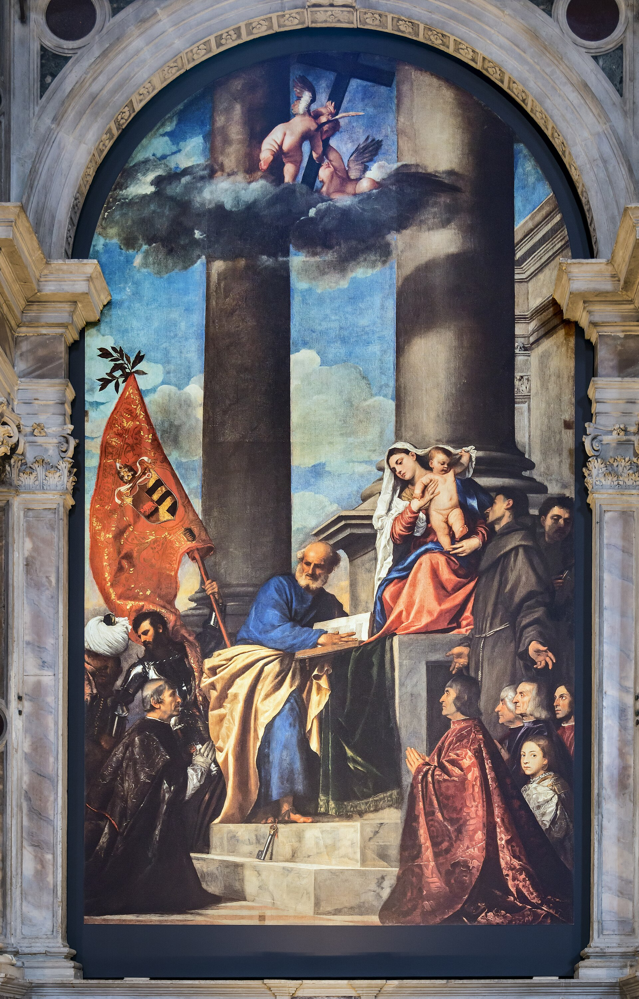
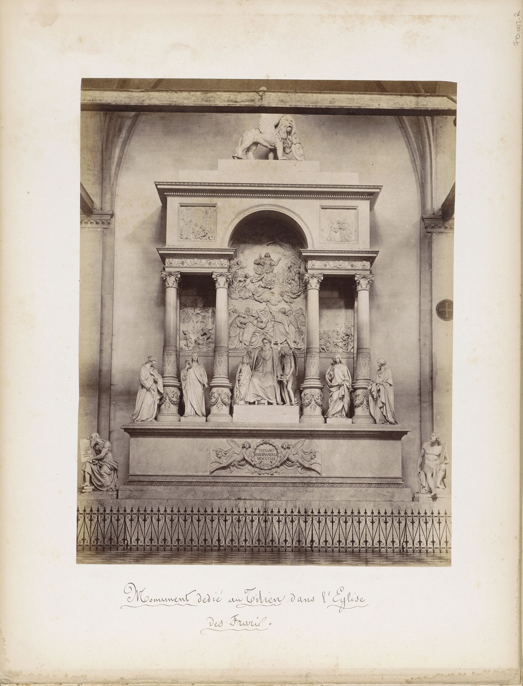
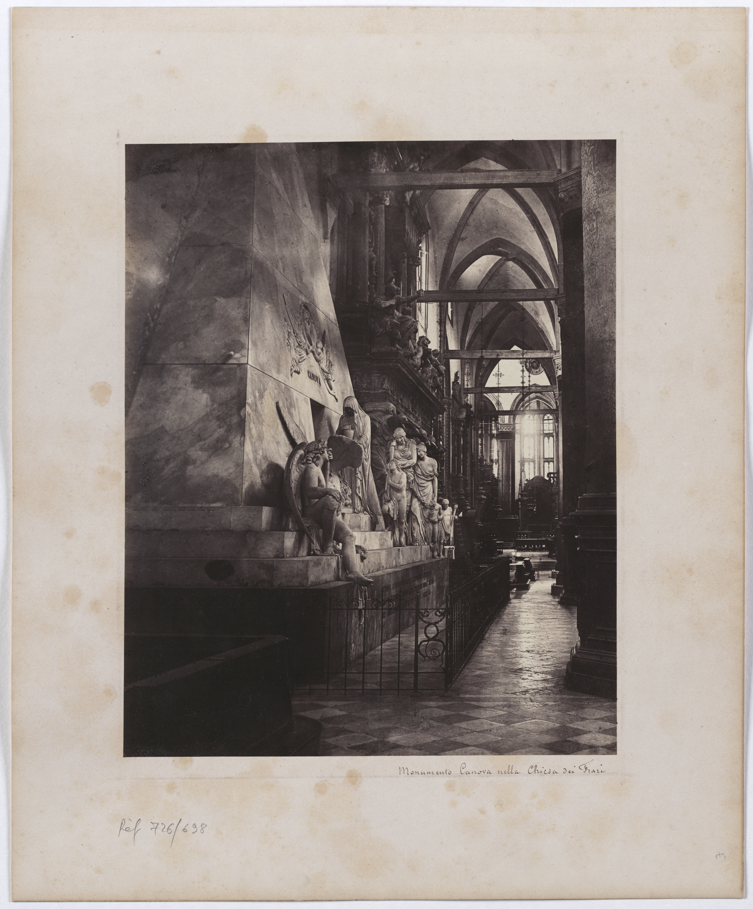
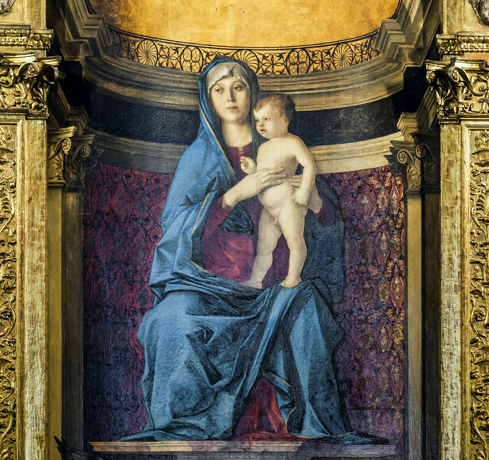
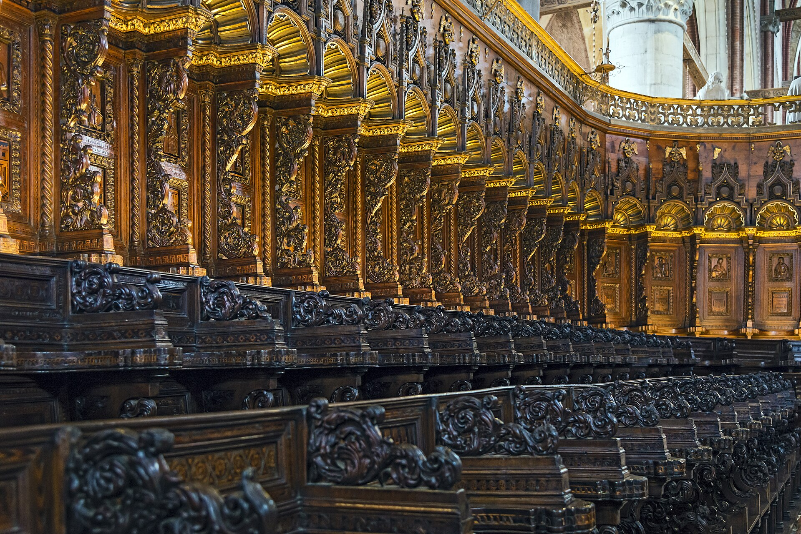

方济各会 1250 年始建、1492 年祝圣的威尼斯第二大教堂。赤砖哥特的“清贫美学”外壳下，藏着提香《圣母升天》（威尼斯文艺复兴的分水岭）、《佩萨罗圣母》、提香之墓与卡诺瓦纪念碑。作曲家蒙特威尔第也长眠于此。
看点路线
Il Percorso
- 1先看“空”：赤砖哥特的巨大内殿--与圣马可的金碧形成两极
- 2主祭坛：提香《圣母升天》690x360cm
- 3左翼：《佩萨罗圣母》--斜线构图的革命
- 4右翼：提香之墓与卡诺瓦金字塔纪念碑
- 5圣器室：贝利尼三联画《圣母与圣徒》1488
重点展品
I Frari · 8 件必看

《圣母升天》
690 x 360 厘米的巨幅祭坛画：圣母的红色与使徒的漩涡把“升天”画成了能量的爆发。委托方起初震惊（“这画的是谁？”），直到查理五世使节盛赞才被接受--威尼斯文艺复兴的分水岭。

《佩萨罗圣母》
圣母不再居中而是移位右侧，两根斜置的大柱把画面切成不稳定的动力场--这幅画被公认为巴洛克斜线构图（鲁本斯到委拉斯凯兹）的起点。

提香之墓
提香 1576 年死于大瘟疫，按遗愿葬在《圣母升天》画下。这座雄伟的纪念碑由 19 世纪的卡诺瓦学生们完成--皇帝的加冕花环与狮子相伴。

卡诺瓦金字塔纪念碑
卡诺瓦当年为提香设计的金字塔方案被拒，他保留了一生；死后学生们按原方案为他建了这座纪念碑。卡诺瓦本人葬在故乡，只有心脏藏在这座金字塔内。

贝利尼《圣母与圣徒》
圣器室的 luminous 三联画：提香的老师晚年的静谧杰作。与隔壁的《圣母升天》对照看--两代人、两种“光”的语法。

木质唱诗班席
完整保存的 15 世纪木质唱诗班席，镶嵌画讲圣方济各生平--威尼斯世俗木工艺的最高峰之一。
蒙特威尔第之墓
歌剧的缔造者、《奥菲欧》（1607）的作曲家长眠在左侧廊的朴素石板下。他同时是圣马可大教堂的乐长三十年--巴洛克音乐从这座城发芽。

赤砖哥特的“清贫立面”
与圣马可的拜占庭镶嵌、总督宫的哥特蕾丝不同：方济各会的赤砖与尖拱。立面的“未完成”是刻意的--钱花在了内部的光与画上。
历史故事
Le Storie
壹建了两百年的“慢工程”
方济各会修士 1230 年代在此落脚，1250 年动工建堂--直到 1492 年才正式祝圣，历时两个半世纪。
“慢”的原因之一是威尼斯的软基：巨大的砖构需要极长的时间等待地基沉降稳定。之二则是方济各会的清贫理念：不急、不炫、钱花在内部的光与画上。
这座“慢工出细活”的教堂最终成为威尼斯第二大--仅次于圣马可。
贰《圣母升天》的差评风波
1518 年，二十多岁的提香为弗拉里主祭坛交付了《圣母升天》：690 厘米高的巨幅画面里，圣母的红色衣袍与使徒的漩涡构成能量风暴。
修士们起初被震住了--有人说“这画的使徒都是巨人，圣母像个女武神”。转机来自查理五世的使节观后盛赞，风向瞬间反转：从“差评”到“杰作”只用了几个月。
这幅画从此被公认为威尼斯文艺复兴的分水岭：此前是贝利尼的静谧，此后是提香的戏剧时代。
叁提香葬在自己的画下
1576 年大瘟疫中，八十多岁的提香去世。按他的遗愿，他被葬在弗拉里--就在《圣母升天》的画下、他一生最引以为傲的作品旁边。
这座豪华的墓纪念碑其实是 19 世纪由卡诺瓦的学生们建的（提香最初的墓简朴得多）。皇帝的青铜加冕花环与圣马可狮子相伴。
在画与墓之间站一分钟：一个画家能得到的最好结局，就是长眠在自己的签名作下面。
肆卡诺瓦的心脏
新古典主义雕塑大师卡诺瓦在 1790 年代参加了提香墓的竞赛，他的金字塔方案被拒--他把图纸保留了一生。
1822 年卡诺瓦去世后，他的学生们按那份被拒的图纸为他建了这座纪念碑--金字塔、哭泣的狮子、阶前的人像。卡诺瓦本人葬在故乡 Possagno，只有心脏按他的遗愿封存在这座金字塔内。
一段“甲方拒绝的方案最终成为乙方纪念碑”的建筑史公案：被拒的图纸比中标的活得更久。
伍蒙特威尔第：歌剧之父长眠于此
克劳迪奥·蒙特威尔第（1567-1643）--史上第一部伟大歌剧《奥菲欧》（1607）的作曲家、圣马可大教堂的乐长三十年--长眠在弗拉里左侧廊的一块朴素石板下。
他把“ monody（单声歌曲）”发展成 opera（歌剧）--这种“用音乐讲戏剧”的形式从威尼斯与佛罗伦萨的宫廷走向了全世界。
路过时低头看一眼那块石板：现代音乐产业的源头之一，安静地躺在哥特的砖拱下。
陆方济各的“砖与光”
弗拉里的赤砖立面永远“未完成”--没有大理石贴面、没有镶嵌画。这不是没钱，而是方济各会的神学立场：清贫即美。
内部却藏着威尼斯最伟大的画作群--这种“外素内华”的反差是方济各美学的宣言：真正的财富在灵魂（画）而不在门面（立面）。
看内殿的光：从哥特尖窗与玫瑰花窗倾泻的自然光打在画作上--建筑师与画家合作设计了“打光系统”。
柒《佩萨罗圣母》：构图的政变
1519-1526 年，提香为佩萨罗家族绘制了他们的家族礼拜堂祭坛画：圣母不再居中而是移位右上方，两根斜置的大柱子把画面切开。
这个构图在 16 世纪是一场“政变”：此前祭坛画的圣母永远居中对称。佩萨罗圣母的斜线与不对称直接预告了巴洛克（鲁本斯、委拉斯凯兹都研究过它）。
画中跪着的家族成员是雅各布·佩萨罗--他在 1502 年的战役中击败奥斯曼舰队，画里的土耳其战俘与旗帜是他的“战绩植入”。
捌贝利尼：老师的静谧
圣器室藏着乔瓦尼·贝利尼（提香的老师）1488 年的三联画《圣母与圣徒》：柔和的金光、静谧的面容--威尼斯画派“ luminism（光色主义）”的源头。
与主殿里学生的《圣母升天》对照看：贝利尼的光是“清晨”，提香的光是“正午”。两代人的师承与突破在同一座教堂里完成交接。
提香青年时代就在贝利尼的工坊学艺--这幅画可能是他看着老师画完的。
玖拿破仑的“仓库”岁月
1810 年拿破仑解散威尼斯的修道院体系，弗拉里的方济各修士被驱逐，教堂一度沦为仓库，艺术品险些流散。
1922 年方济各修士重返弗拉里--至今仍在此服务。这段“仓库岁月”的痕迹之一：部分画作的位置与原始设计不同（拿破仑时期被移动过）。
一座教堂的百年沉浮：从修道院核心到仓库再到活着的教区--赤砖立面下藏着一整个 19 世纪的动荡。
拾木质唱诗班席：工匠的森林
内殿的木质唱诗班席（Marco Cozzi，1465-68）完整保存了五个世纪：镶嵌的木刻讲圣方济各的生平，人物的细腻程度堪比同时代绘画。
这是威尼斯世俗木工艺的巅峰之一--15 世纪的威尼斯家具与木雕行会与画家的地位几乎平起平坐。
修道院被解散时它幸存了下来：因为太大了搬不走，也因为太美了没人舍得劈。
参观贴士
Consigli Pratici
- 与圣洛克大会堂联游（步行 2 分钟）--同广场的两个极端：慈善行会的绘画厅 vs 修道院的巨构
- 《圣母升天》最佳观看时段：下午阳光从中殿高窗射入，画面打光最均匀
- Chorus Pass（€12）含此教堂 + 圣马可博物馆等十座教堂，如看 3 座以上回本
- 钟楼（1396 年）是威尼斯第二高--不开放登顶，但广场上看它与赤砖的对比极美
- 弥撒时段（工作日 17:30-18:00? 以门口告示为准）关闭参观
顺路同游
Da Non Perdere